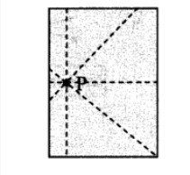
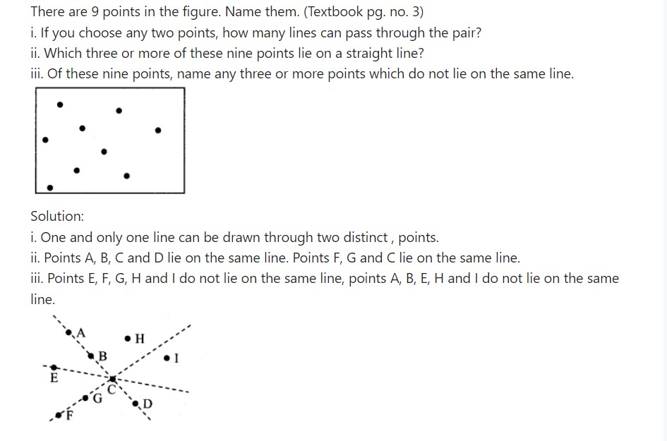
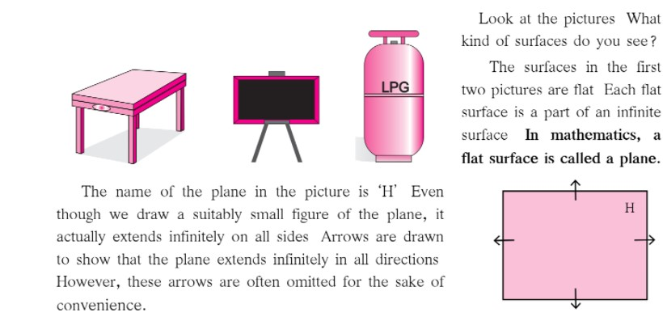
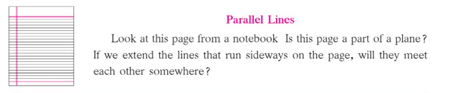
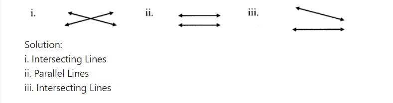
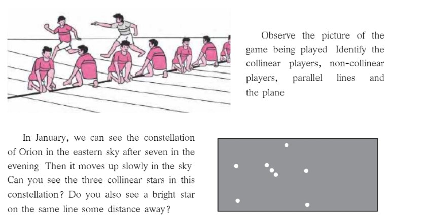
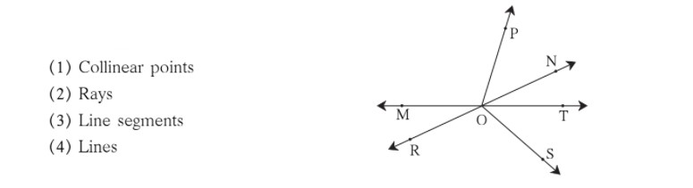
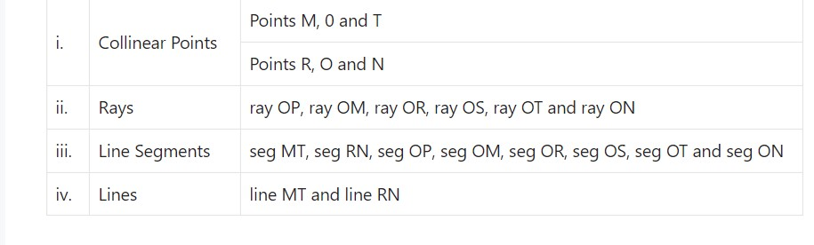
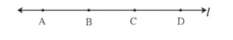

1. Basic Concepts in Geometry
Let’s discuss.
Complete the rangoli. Then, have a class discussion with the help of the following questions:
Solution:-
Let’s learn.
Points
A point is shown by a tiny dot We can use a pen or a sharp pencil to make the dot The dots in the rangoli are the symbols for points
A point can be given a name Capital letters of the alphabet are used to name a point The points P, A and T are shown in the figure alongside
Line Segments and Lines
Take two points A and B on a sheet of paper and join them using a ruler We get the straight line AB Can we extend this line further on the side of point B? On the side of point A? How far can we extend it?
We can extend the line in both directions till the
edges of the paper If the paper is very big, the line
can be very long, too
How long would the line be on a playing field?
Let’s imagine that we can extend this line forever without any limits on both sides To show this extended line on paper, we use arrowheads at both ends of the line In mathematics, when we say line, we mean ‘straight line’ The first line that we drew was only from point A to point B It was a piece or a segment of the longer line A line segment has two points showing its limits They are called endpoints We write line segment AB as ‘seg AB’ in short A and B are its endpoints A line is named using a small letter or by using any two points on the line Line l has been shown alongside Its name can also be written as line PQ or line QP
Rays
Look at the pictures What do you see? Rays starting from the sun go forward in all directions Light rays from the torch also start from a point and go forward continuously in one direction
A ray is a part of a line It starts at one point and goes forward continuously in the same direction The starting point of a ray is called its origin Here, P is the origin An arrowhead is drawn to show that the ray is infinite in the direction of Q The figure can be read as ray PQ
The ray PQ is not read as ray QP.
Try this.
Activity 1 : Draw a point on the blackboard Every student now draws a line that passes through that point How many such lines can be drawn?
Activity 2 : Draw a point on a paper and use your ruler to draw lines that pass through it How many such lines can you draw?
Solution:-
An infinite number of lines can be drawn through one point.
When two or more lines pass through the same point, they are called concurrent lines and the common point through which they pass is called their point of concurrence In the figure alongside, which is the point of concurrence? Name it
Can you tell?
Let’s learn.
Planes

Write the proper term, ‘intersecting lines’ or ‘parallel lines’ in each of the empty boxes.
My friend, Maths : On the ground, in the sky.
PRACTICE SET 1
Q1. Look at the figure alongside and name the following:
Solution:-
Q2. Write the different names of the line
Solution:-
The different names of the given line are line l, line AB, line AC, line AD, line BC, line BD and line CD.